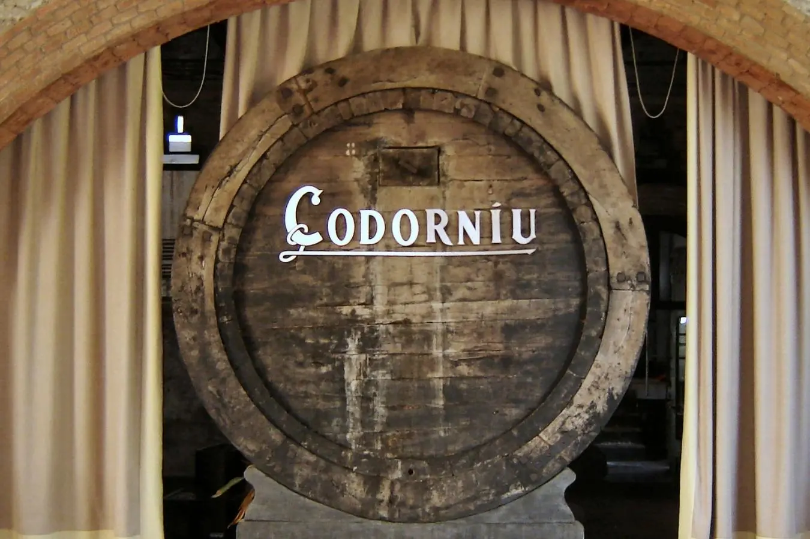
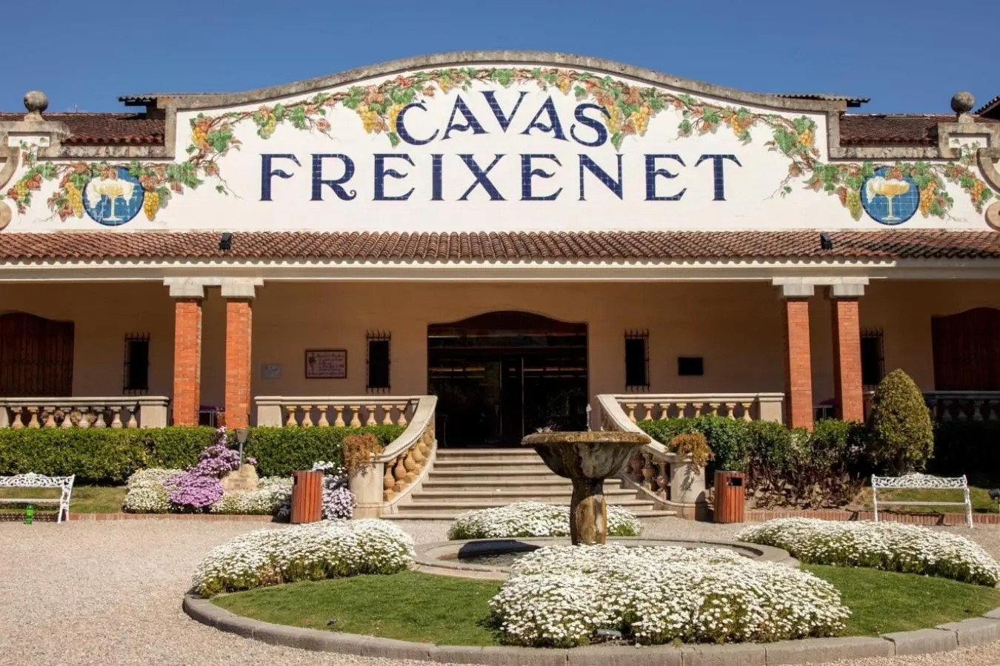

Esta bodega fue fundada en 1872 por Josep Raventós, de Codorníu. Se caracteriza por la primera elaboración de 3.000 botellas de cava siguiendo el método tradicional y utilizando uvas autóctonas del Penedés.
Además de poder disfrutar de esta experiencia y degustar sus cavas, la estructura del edificio es emblemática. Diseñada por el arquitecto Josep Puig, la construcción simboliza la alianza entre la naturaleza y la labor humana del cava.
Cuentan con dos modalidades de visitas. La Discovery Tour donde te ofrecen una visita guiada y dos catas de cava. Y la visita The Iconic Tour que comprende la visita y cata de tres cavas con aperitivos. Ambas visitas tienen una duración de 90 minutos.
Ubicada en el Penedés, esta bodega familiar fundada en 1861 se caracteriza por su magnífico edificio modernista construido en el año 1927 por el arquitecto Josep Ros i Ros.
La bodega ofrece diferentes tipos de visitas. Desde la experiencia de Cava Bar donde puedes degustar sus cavas y vinos en su magnífico jardín, freixenet tour donde tendrás una visita guiada por sus bodegas y te explicarán los distintos procesos de elaboración. Visitas & Maridaje donde experimentarás una cata de sus cavas acompañados con productos gourmet de proximidad.
En el caso que la visita sea con la familia, te ofrecen una experiencia de Family tour la cual está pensada para que participen los más pequeños. El objetivo es transmitir los secretos y curiosidades a la hora de la elaboración de la cava. Esta cata incluye cavas con 0.0% de alcohol para que los niños puedan degustar.
